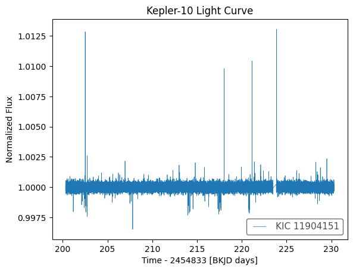
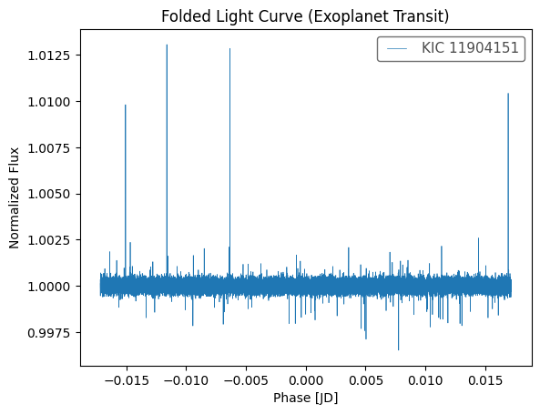
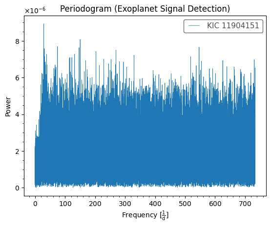

Active Analysis: Kepler Light Curve Dataset
Status: Searching for Transit Signals...
Kepler-10
Detection Method: Transit Photometry
Period: (from Python output)
Confidence: Medium



Periodic brightness dips are consistent with potential exoplanet transit events. Further verification is required using additional stellar datasets.